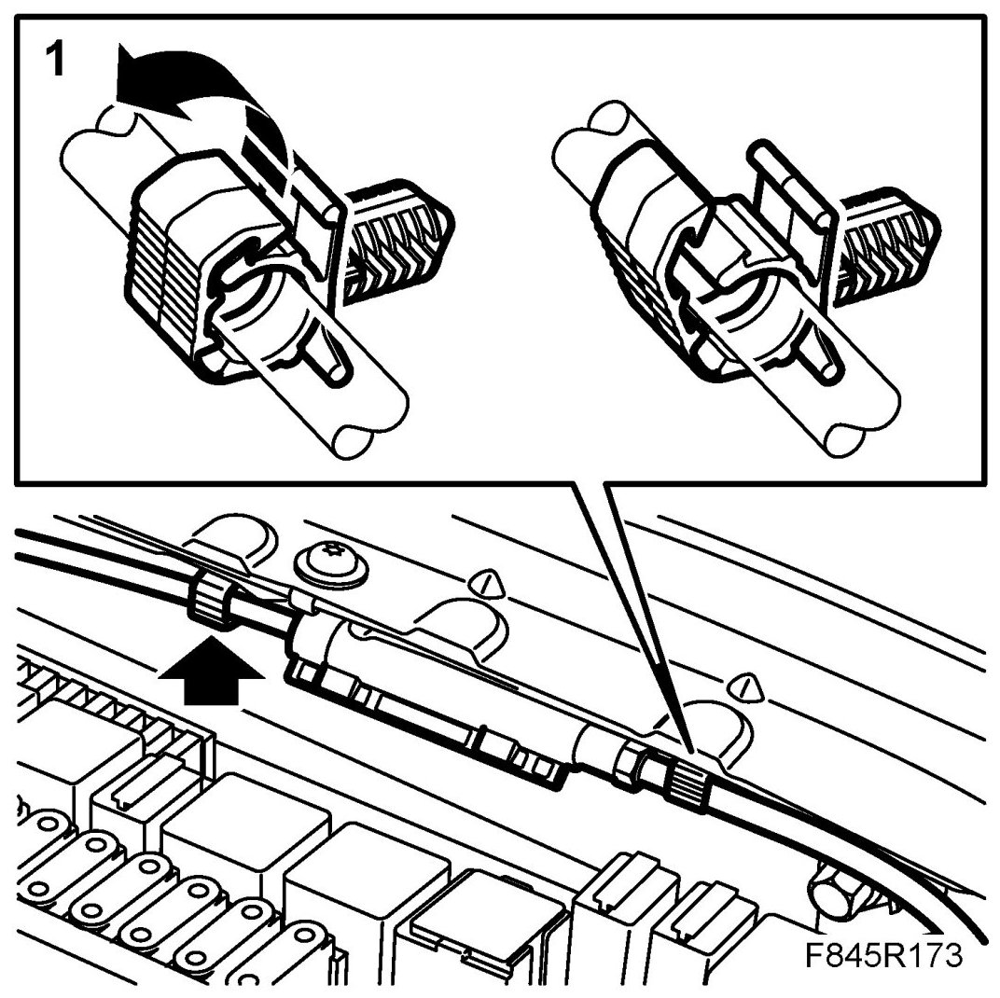
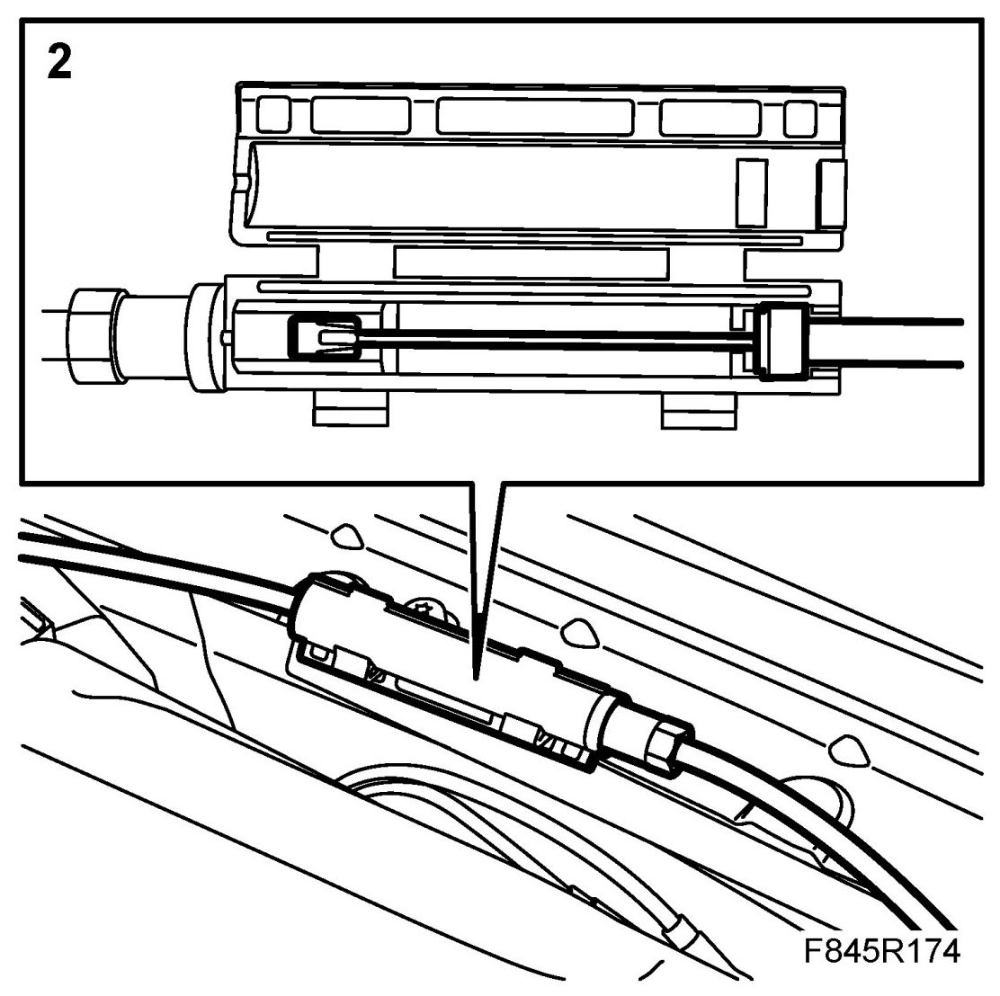
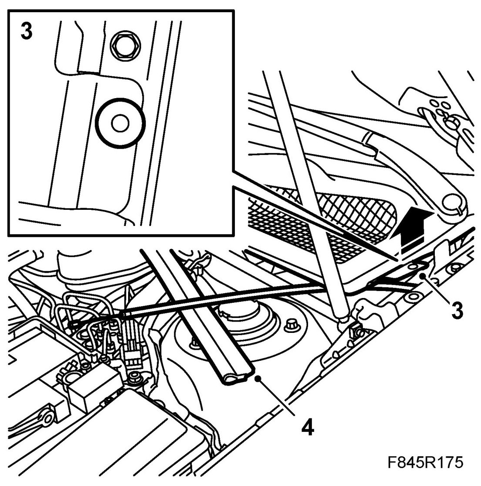
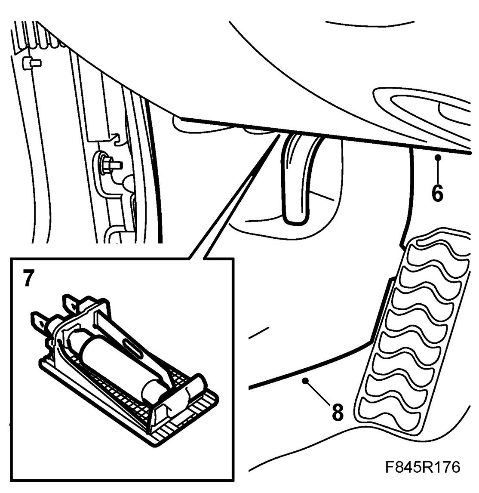
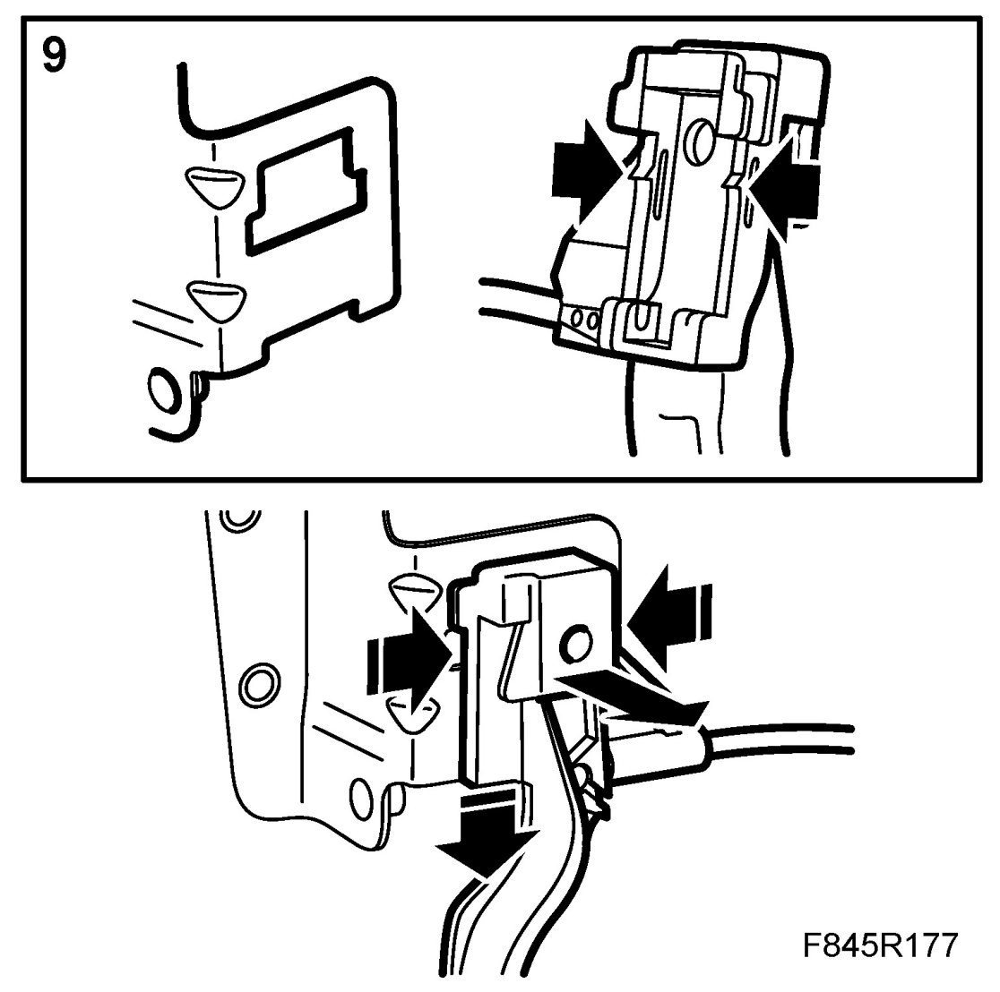
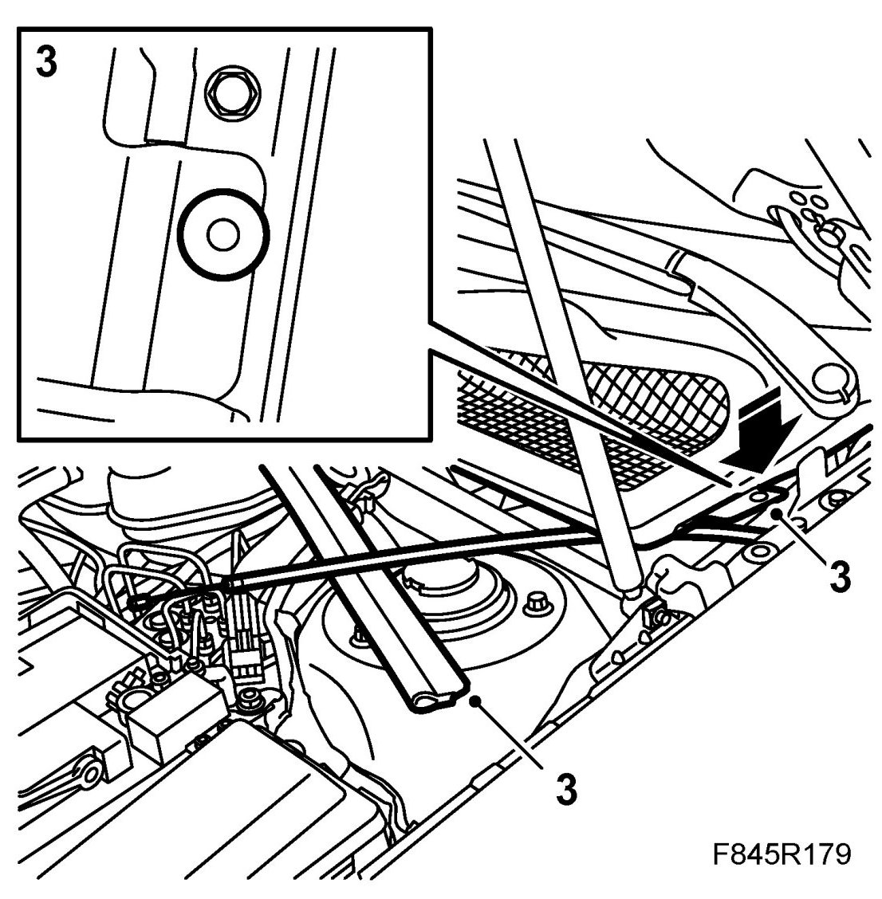
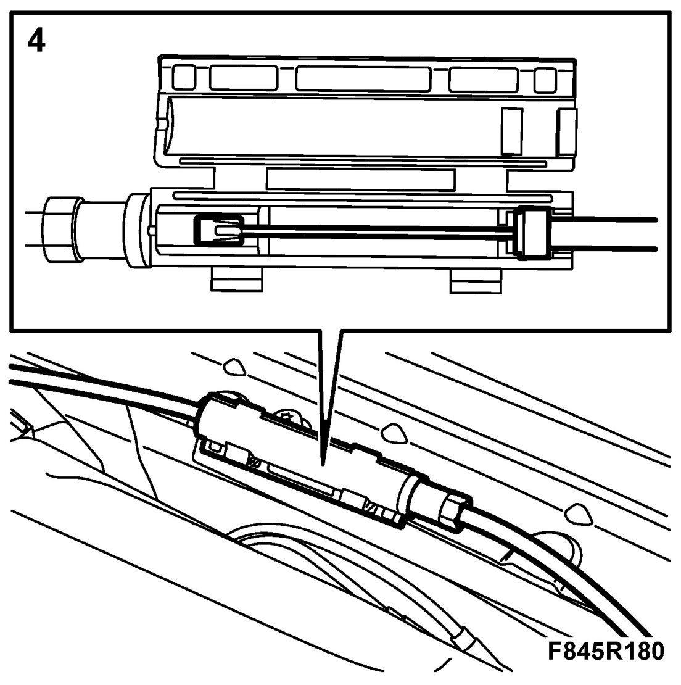
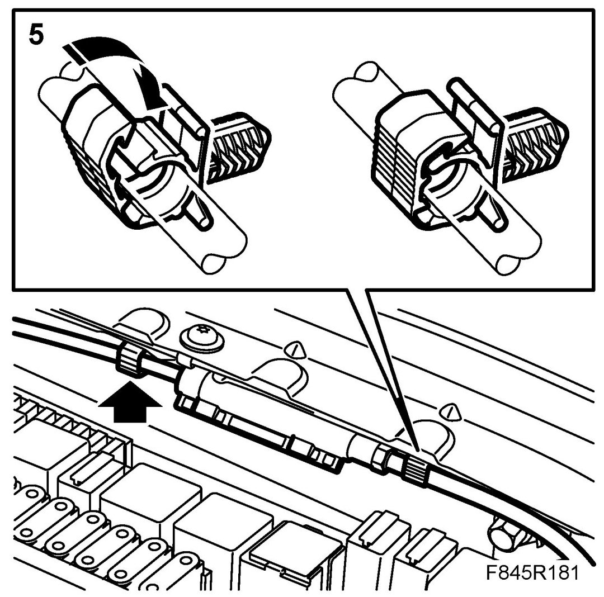
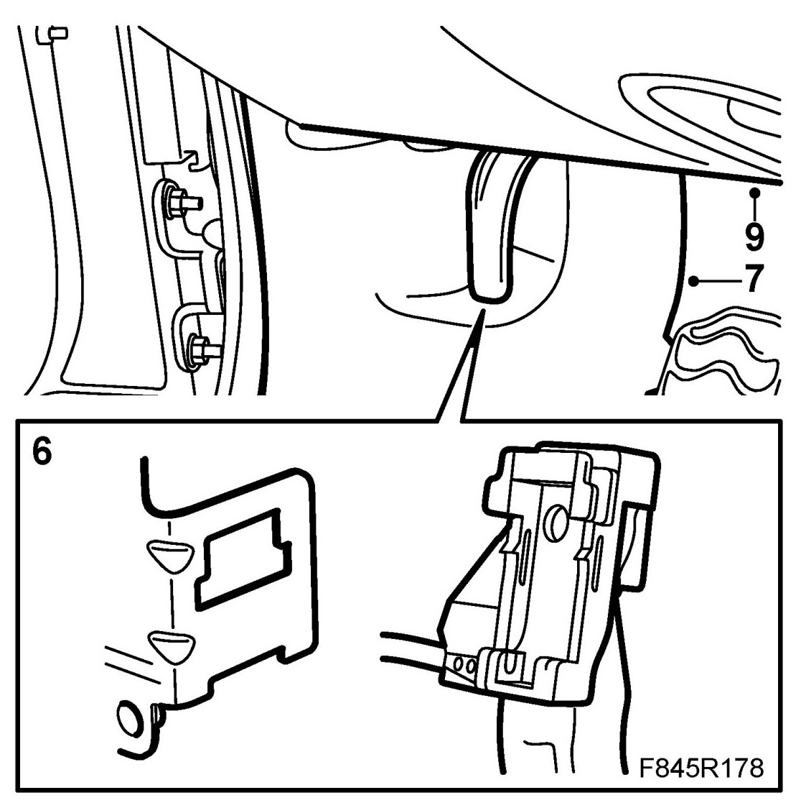

Hood Latch Release: Service and Repair
Bonnet Lock Control
Removing
1. Undo the quick coupling on the bonnet cable, first undoing the clip from the body.

2. Split the quick coupling. Use a screwdriver.

3. Remove the cowl cover's clips.

4. Loosen the rear bonnet seal. Lift up the cowl cover a little.
5. Remove the bolts on the lower part of the panel on the driver's side.

6. Fold down the lower part of the panel.
7. Remove the lamp.
8. Remove the inner and front scuff plates.
9. Insert two screwdrivers into the control mountings and use them to press in the circlip while pulling down the control. Pull out the cable.

Fitting
1. Thread the bonnet lock wire back through the rubber seal. Make sure the rubber seal is in position.
2. Thread the bonnet lock wire through the cowl cover's bushing.

3. Fit the cowl cover clips. Fit the rear bonnet seal.
4. Connect the quick coupling on the bonnet cable.

5. Press the clip into the body.

6. Fit the bonnet lever by positioning the lever and pressing upward.

7. Fit the inner and front scuff plates.
8. Fit the lamp. Fold back the lower part of the panel and fit the bolts.
9. Check the function of the bonnet lock.